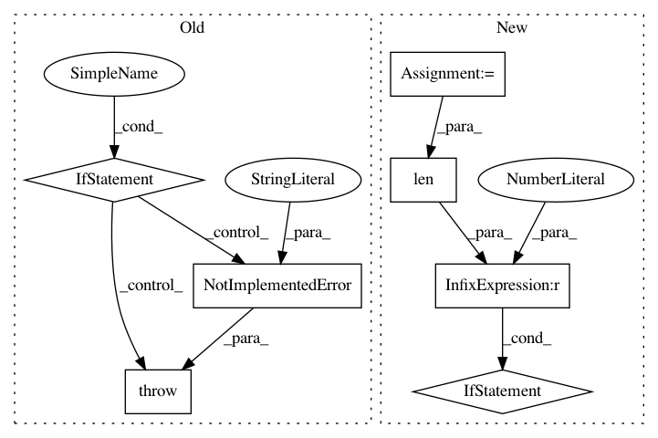

08f049c9fc5fc0f3da5a830de72a583007cdec66,elfi/methods/methods.py,BayesianOptimization,__init__,#BayesianOptimization#Any#Any#Any#Any#Any#Any#Any#Any#Any#Any#,319
Before Change
target_model = \
target_model or GPyRegression(len(self.model.parameters), bounds=bounds)
if not isinstance(initial_evidence, int):
// Add precomputed data
raise NotImplementedError("Initial evidence must be an integer")
if initial_evidence > 0:
self.init_acquisition = UniformAcquisition(target_model)
else:
self.init_acquisition = None
After Change
if not isinstance(initial_evidence, int):
// Add precomputed batch data
params = self.to_array(initial_evidence, self.parameters)
target_model.update(params, initial_evidence[self.target])
initial_evidence = len(params)
// TODO: check if this can be removed
if initial_evidence % self.batch_size != 0:
raise ValueError("Initial evidence must be divisible by the batch size")
self.acquisition_method = acquisition_method or LCBSC(target_model)
self.target_model = target_model
self.n_initial_evidence = initial_evidence
In pattern: SUPERPATTERN
Frequency: 4
Non-data size: 7
Instances
Project Name: elfi-dev/elfi
Commit Name: 08f049c9fc5fc0f3da5a830de72a583007cdec66
Time: 2017-03-31
Author: jarno.lintusaari@aalto.fi
File Name: elfi/methods/methods.py
Class Name: BayesianOptimization
Method Name: __init__
Project Name: geomstats/geomstats
Commit Name: bee606d2a668d462c9eea4cc23d7cfd8fbeb36a3
Time: 2020-01-15
Author: hadizaatiti@gmail.com
File Name: geomstats/geometry/hyperbolic_space.py
Class Name: HyperbolicMetric
Method Name: log
Project Name: hyperspy/hyperspy
Commit Name: 3a87faf42dd2b00b99184270eb798b7bdf8c2301
Time: 2017-05-23
Author: frandelapena@gmail.com
File Name: hyperspy/ui_registry.py
Class Name:
Method Name: get_gui
Project Name: onnx/onnx-coreml
Commit Name: fbea8d76a73d90c2cb99775c6ebdeafc84bbdf9d
Time: 2018-03-05
Author: aseem.elec@gmail.com
File Name: onnx_coreml/_operators.py
Class Name:
Method Name: _convert_slice